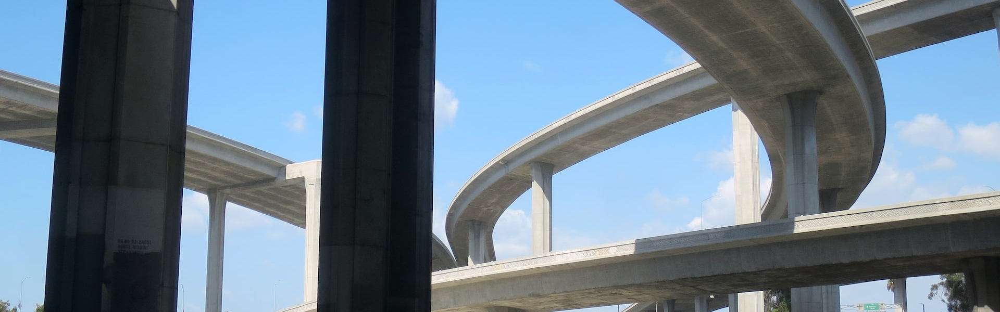
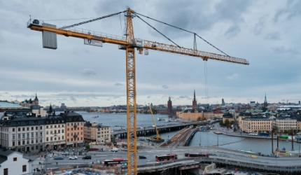
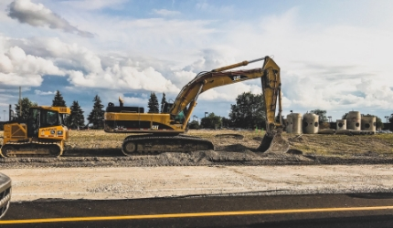

Field of Infrastructure
기반시설부문
사업소개도로 및 공항 분야
국도의 지역간 균형발전과 국가 경쟁력 향상의 중요한 역할을 담당하는 주요 도로의 타당성 조사, 기본설계, 실시설계를 비롯하여 수많은 도로건설사업을 성공적으로 수행하고 있습니다. 친환경적 설계, 안전한 설계 등을 위해 노력하고 있으며, 지속적인 기술개발과 글로벌 인재양성으로 도로부문의 중추적인 역할을 담당하도록 노력하고 있습니다.
업무 영역
타당성 조사 및 기본계획 - 관련계획 조사 및 검토
턴키 및 민자사업 - 설계기술검토/설계VE/시공계획/시방서
기본설계 및 실사설계 - 노선선정/평면 및 종단선형 설계
해외 사업 - 해외도로분야 설계 및 감리

주요 프로젝트

[건설관리사업분야]
남양주 창현 3도시 신축공사 부지조성 및 진입도로 토목 감리용역(3개월)

[건설관리사업분야]
남양주 창현 3도시 신축공사 부지조성 및 진입도로 토목 감리용역(3개월)
[건설관리사업분야]
남양주 창현 3도시 신축공사 부지조성 및 진입도로 토목 감리용역(3개월)
사업 실적
| 연도 | 과업명 | 서비스 형태 | 발주처 |
|---|---|---|---|
| 2014 | 롯데몰 수원역점 중 임시우회도로 설계용역 | 도로 및 공항 | 롯데건설주식회사 |
| 2011 | 김포skypark9호선연결공사,개화사거리대체우회도로건설공사,서울역북부역세권건설공사 | (주) 정토지오텍 | |
| 2010 | 장유신문-강서가락간(2차구간)건설공사 | 롯데쇼핑 (주) | |
| 2006 | 김포skypark신축공사도로및구조물설계용역 | 롯데쇼핑 (주) |